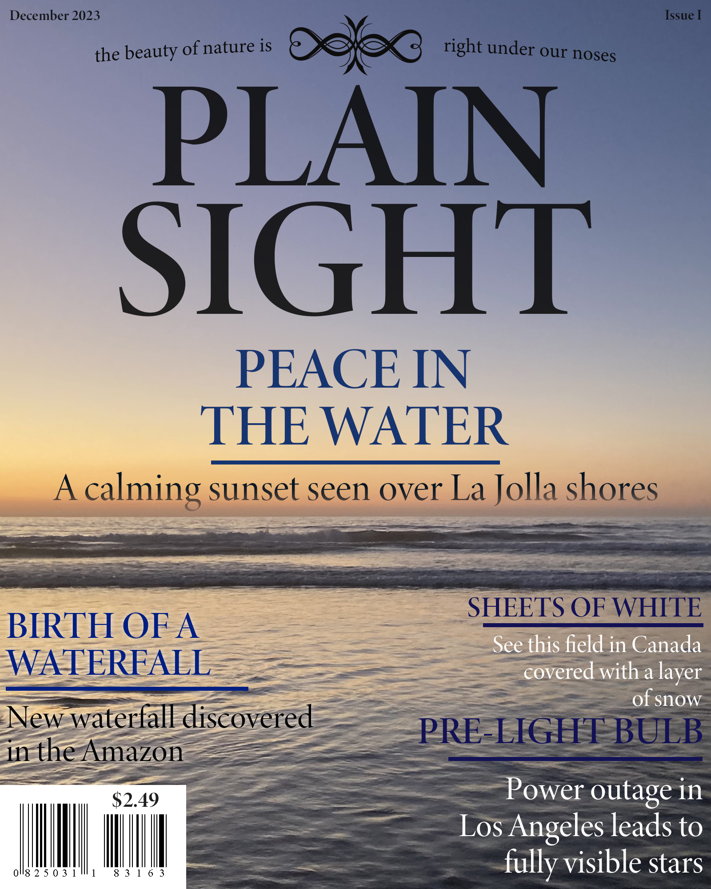

This is the cover for the fictional magazine I created, Plain Sight.
The background image is an ocean sunset in La Jolla, as stated on the
cover. I decided to use this image because it evokes a sense of
tranquility in the viewer.
The magazine itself is about nature photography, which is the reason why
the background image fits in with it. I added more article previews to it
which are also about nature.
Photoshop skills used:
- Masking (masking out some parts of the text to make it blend with the water)
- Brush tool (darkening some parts of the image to make the text blend in more)